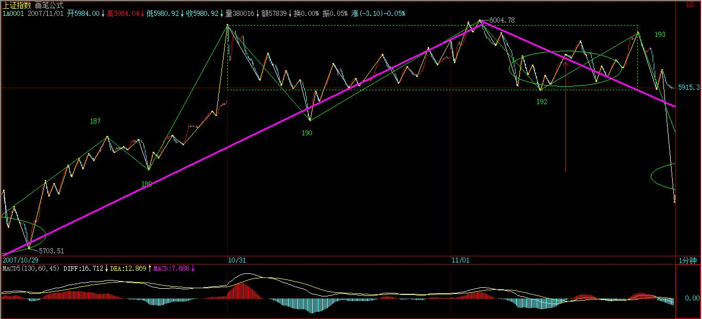
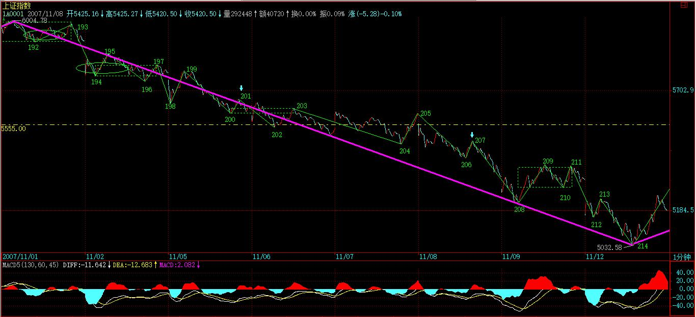

(2007-11-06 22:38:43)
本ID的理论，对所有的走势，进行了一个最明确的分解，所有的分解，本质上只有两类，就是延续与转折，用残酷一点的词语，就是生和死。【韶山映山红】所有分解的目的，本质上就是判断走势延续还是转折。】
一个走势类型的死，必然意味着一个走势类型的生，走势，就在这样一个生死的轮回中，如同众生的生命，生死轮回不断。看明白了股票的走势，对人生，也大概应该有点领悟了。【韶山映山红】死有两种，一是死，然后接着另一个的新生。一是浴火重生，包含本身的升级的新生。】
一个走势类型确立后，同时就确认了前一个走势类型的死，同时也开始了自己面向死亡的生存。 【韶山映山红】后一个走势的确立，才能确认了前一个走势类型的结束。这里是右侧交易的角度。背驰结束趋势、第三类买卖点结束盘整，是左侧交易的角度。结束的是原走势的当下，确认的是延续的不再。】
如同众生的轮回生死，在死与生之间，有一段被称为中阴身的阶段，股票的走势，同样存在着这个阶段。【韶山映山红】南怀瑾《人生的起点和终点》：“死了的人，怎么样产生中阴？就是这个生命死了，还没有转变成另一个生命以前，中间存在的这一段，叫做中阴，中国人普通叫灵魂。中阴身不是鬼，鬼是鬼道的生命，已经是另外一个生命了。中阴身虽不是鬼，可是比鬼还厉害，中阴身有神通的哦！”】
如果说前一个走势类型的背驰或盘整背驰宣告了前一个走势类型的死亡，那么到新的走势类型确立，这里有一个模糊的如同中阴般的阶段。【韶山映山红】背驰或盘整背驰都可以宣告相应走势类型的死亡，趋势背驰宣告趋势的死亡，盘整背驰宣告趋势或者盘整的死亡。盘整背驰包括abc盘整背驰、a+A盘整背驰、a+A+b盘整背驰。abc盘整背驰宣告三段盘整走势的死亡。a+A+b盘整背驰宣告a+A+b盘整走势的死亡。a+A盘整背驰不能直接宣告什么走势的死亡，要借助abc盘整背驰判断。★可以做个专题，以后研究。】
要把握这阶段的走势，必须把前一段走势的部分走势结合起来分析。也就是说，前一段走势的业力在发挥着作用，这个业力与市场当下的新合力构成了最终决定市场方向的最终合力。【韶山映山红】中阴阶段的分析范围，包括前后走势各一部分，。】
【韶山映山红】走势类型包括盘整和趋势。具体细分内部结构，完全分类包括：abc盘整、a+A盘整、a+A+b盘整、线段类趋势、a+A+b+B+c趋势。原文分析的中阴阶段是线段类趋势背驰的例子。abc盘整、a+A盘整、a+A+b盘整、a+A+b+B+c趋势的中阴阶段分别是什么样子？如何分析？★可以做个专题，以后研究。】
【韶山映山红】a+A+b+B+c趋势的中阴阶段，前一段走势的部分走势就是B+c部分，加反弹三段，构成更大级别的中阴中枢，然后看第三类买卖点的情况。也就是说，a+A+b+B+c趋势背驰之后，都先假设B中枢扩展升级。】
【韶山映山红】abc盘整的中阴阶段，前一段走势的部分走势就是bc部分，因为是线段级别的中阴阶段，最终还是归结为线段类趋势背驰的情况。】
【韶山映山红】a+A盘整的中阴阶段，其实还是A中枢的延伸，前一段走势的部分走势就是A中枢，也就是中阴中枢本身。】
【韶山映山红】a+A+b盘整的中阴阶段，前一段走势的部分走势就是b2、b3，最终还是归结为线段类趋势背驰的情况。】
【韶山映山红】也就是说，中阴阶段只分两种：次级别走势类型的线段级别中阴阶段，本级别走势类型的中枢级别中阴阶段。】
用一个例子，就很好地能说明这个问题。
下图中，191的背弛宣告前一走势类型的死亡。【韶山映山红】“191的背弛”是指哪个背驰？被宣告死亡的“前一走势类型”又是哪个走势类型？★181开始的向上的盘整走势，没有形成明显的背驰，线段类上涨趋势可以从185开始，一直没有背驰，直到190-191对188-189的线段类盘整背驰。“191的背弛”就是这个线段类盘整背驰，被宣告死亡的“前一走势类型”就是从185开始的线段类上涨趋势。】
按道理，新的走势类型，是从191开始分析的，【韶山映山红】线段类上涨趋势背驰的背驰点就是两个走势类型的切换点。】但这时候，新的走势类型连第一段线段都没走出来，甚至走到193的位置，也依然轮廓不明，【韶山映山红】193的当下可以看作是二卖，但189开始的中枢震荡在延伸，并不能当下判定走势转折的成立。】因此，这时候，就是典型的中阴身阶段，【韶山映山红】除非193是非背驰上涨，否则都是中阴阶段。】必须借助前面189开始形成的中枢来完成分析与相应的操作。【韶山映山红】“前面189开始形成的中枢”是189-192，是个向上走势的回踩中枢，需要有192-193的向上段来证明192的结束。那么，如果193低于190呢？★以后研究。如果193低于190，193成为188-191中枢的三卖，193同时是191开始的新走势的二卖，也就形成了二三卖重叠。189-194可以视为线段类趋势下跌，193是线段类趋势的三卖，但不是189-192中枢的三卖，中阴阶段直接结束。】
【韶山映山红】191开始的都是线段类下跌趋势，却没有这个中枢可以找三卖，那就更滞后的判断？★以后研究。】

如果从191开始，192、193都很难说有什么可依据的。
当然，可以说193就是第二类卖点，这个自然没错，【韶山映山红】193对191不创新高，或者创新高而盘背，都是线段级别的第二类卖点。如果发生了中枢级别的转折，193也会成为中枢级别的二卖，但是只能追认，这种情况的离场就要依靠中阴中枢的三卖。】但站在189开始中枢的角度，这就存在一个中枢震荡的问题，这样，这个干瘪的第二类卖点，就有一个更大的可依靠的分析基础。一切关于中枢震荡的分析，都可以利用到关于192、193以及后面走势的分析中，这等于有了双重的分析保证。【韶山映山红】193是二卖，之后可能下跌，也可能继续反弹，要等着看194是否背驰、195是否成为191-194中枢的三卖。另一方面，189-192中枢的三买卖点先出哪一个，是中枢震荡以后的走势方向。走势类型分析，和中枢分析，这个“双重的分析”提供的保证，可靠性就很大了。】
当然，后面的195的第三类卖点，也是站在中阴阶段的角度说的。【韶山映山红】“195的第三类卖点”是回升中枢190-193的，也就是说，假设189是新走势的起始点来分析。并不能真的拿189作为新走势的起始点，所以说“是站在中阴阶段的角度说的”。】
但这一点是一个中阴阶段与新的走势类型确立阶段的分界点，【韶山映山红】线段类上涨趋势，背驰，中阴阶段，195当下确立是一个同级别转折，线段类上涨趋势＋线段类下跌趋势。】195出来以后，新的走势类型最开始的形态就确立了，也就是至少是一个线段的类下跌走势。【韶山映山红】“最开始的形态”就是线段类下跌趋势191-196。】这时候，分析的重心，就可以移到191开始的新走势类型上了。这时候，就可以基本在这个线段级别上，不用考虑191之前的事情。【韶山映山红】191之前是线段类上涨趋势，背驰而完成走势类型。后面可能有同级别转折，也可能形成中枢级别走势。191-194属于中阴阶段，195当下确立是一个同级别转折，就“不用考虑191之前的事情”了。除非后面的走势升级，在高级别的角度看，可能还要“考虑191之前的事情”。】
但191之前的走势并不是没有用了，而是在更大级别上，例如在1分钟、5分钟等等级别上发挥作用了。【韶山映山红】191之前是线段级别的类上涨，之后是线段级别的类下跌。】191后面出现的走势，就和191之前的，结合出大级别的走势形态。【韶山映山红】哈哈，果然还要“考虑191之前的事情”。】
因此，当各位熟练以后，标记上就不一定要不断地标记下去了，例如，如果你是按1分钟级别操作的，那么，前面191个线段记号，可能就可以一下简化为10个不到的1分钟级别相关的记号。【韶山映山红】1分钟级别的记号怎么标注？每一个走势类型的起止点的顺序数字？按1分钟的同级别分解标注？不考虑升级的问题？★以后研究。】当191后面的走势演化出的1分钟走势结束后，这1分钟级别的记号才再增加一个，这样，记号的数目就很有限了。当然，如果是5分钟级别、30分钟、日线等等，就更少了。
为了方便明确起见，还是把记号的级别进行分类，例如，用Xn代表线段的记号，用Yn代表1分钟的级别，Wn代表5分钟的记号，Sn代表30分钟记号。日、周、月、季、年，分别也可以用Rn、Zn、Mn、Jn、Nn来表示。其中的n都是具体的数字，这样，所有的走势，都可以被这个标号体系所标记而清楚异常了。【韶山映山红】月用M，其他的都是拼音首字母。】
例如，对于191这个点位，站在线段上，就是X191的标号，站在1分钟级别，可能就是某个Yn的标号，【韶山映山红】191只是线段类上涨的端点。】
而189这个点，就只有线段的标号，这同时也显示了，191这点和189点的重要性是不同的。
什么是最牛的点？就是从线段一直到年，同时都有标号的那个点，如果是顶，那就是百年大顶，当然，是否有幸碰到这样的点，就看各位的运气了。
这个标号体系，不单单为了方便阅读、记号，首先就培养了各位一种综合的、系统的习惯。看一个走势，就要知道，不是单单是一个线段，而是在一个大的多层次系统里，这样才不会被每天的波动所迷失。
其次，这个标记的过程，意味着什么？既然线段有中阴阶段，那么其他级别当然也有。所以无论任何级别，在一个顶点出来后，都有对应级别长度的中阴阶段。
注意，一定要注意。为什么很多人逃了顶，最后还是被套住了；抄了底，最终还是没赚到钱，被震出来了。这就是被相应级别的中阴阶段给搞死的，而且，越大级别转折后的中阴阶段，越能搞死人。
就如同人的中阴，非人非鬼；行情走势的中阴阶段，也是多空齐杀，不断折腾转换。等最后转折确认时，就如同已经重新投胎，饭熟了，还找米，能有戏吗？【韶山映山红】行情走势的中阴阶段，是转折还是中继？不断的折腾转换，多空齐杀，也就齐杀多空。等最后转折确认时，新走势的第三类买卖点已经出现了，只有搭车的机会了。饭熟了，也就是转折了，大势已去，还找原来方向的米，已经物是人非了。】
有些蠢人，经常在行情转折的中阴阶段，觉得世界又美好了，或者世界又恶劣了，结果都是被业力所牵引。【韶山映山红】中阴阶段可能是中继，也可能是行情转折。不能预测，也就不应该有好恶。所以“觉得世界又美好了，或者世界又恶劣了，”都是被自己的喜好动了眼睛。】
中阴阶段，无一例外，都是表现为不同级别的盘整（注意，这是只从截取这一阶段的形态说，并不是说新的走势类型一定是盘整）。【韶山映山红】这里说的盘整，不是盘整走势类型的意思，而是中枢震荡盘整的意思。上涨+盘整+下跌的盘整就是这样的。】
也就是围绕前一走势的某一部分所构成的中枢震荡，【韶山映山红】注意这里，不说前一走势的最后一个中枢，而说“前一走势的某一部分所构成的中枢”。】
即使是所谓的V型反转，也一样，只是震荡的区域回得更深而已。【韶山映山红】线段级的类上涨，背驰结束，顶部盘整构成1分钟中枢。顶部的盘整背驰带来线段级的类下跌，在中枢三卖后结束中阴阶段。这里是线段级别的V型反转。】

其实任何转折，也就是第一类买卖点之后，都对应着某一级别的V型反转，
【韶山映山红】“任何转折，也就是第一类买卖点之后，”这句话有两层意思：第一类买卖点之后必转折，转折也必然有第一类买卖点。 这句话的解读，首先要有一个基本概念做前提，就是，第一类买卖点不等于趋势背驰点，盘整走势的结束点也是第一类买卖点。也就是说，任何一个走势类型的起点和终点都是第一类买卖点。】
【韶山映山红】“都对应着某一级别的V型反转”，这个某一级别都包括哪些级别？★往小的方向只关注次级别，次级别肯定有这个V型反转。更小级别的V型反转没有意义。更大级别要慢慢走出来，也不是当下的事。当下要分析的是，本级别是否一定有V型反转？线段类盘整背驰属于本级别的一种背驰，所以有本级别的V型反转。中枢盘整背驰、趋势背驰属于次级别的一种背驰，所以必然有的是次级别的V型反转，如果因此引起了本级别的V型反转，那就至少是本级别的反向走势，甚至可能有更大级别的盘整了。】
例如，191的转折，190-191与191-192，其实就是一个V型反转，只是级别特别小。【韶山映山红】191的转折，是线段类上涨趋势背驰之后的转折，也就是1分钟线段级别，到1分钟中枢级别，后来的演化，又成了线段类趋势上涨+线段类趋势下跌的转折。这里的V型反转190-191与191-192是线段级的，相对转折的级别来说，不算是“级别特别小”啊。★以后研究。】

这个V型反转的级别，决定了中阴的级别与力度。【韶山映山红】构成V型反转的元素的级别决定V型反转的级别。V型反转的最大级别决定了中阴的最大级别。力度如何决定？★最终级别越大力度越大？当下的力度判断呢？】
例如，站在日线图上看6124点前后N天的走势，其实就是某级别的V型反转，【韶山映山红】日线图上笔之间没有盘整背驰，不是日线级别的V型反转，所以缠师只说“是某级别的V型反转”。初步看到，递归的5分钟中枢盘整背驰，1分钟V型反转。】然后就同时进入中阴阶段。【韶山映山红】6124这样的大顶，很容易有多个级别都是V型反转，所以说“同时进入中阴阶段”。】
注意，中阴阶段结束后，【韶山映山红】中阴阶段的盘整出现第三类买卖点结束，中阴阶段就结束。】不一定就是真正的反转，【韶山映山红】低级别的V型反转引发高级别的中阴阶段，不一定会导致高级别的反转。】也可以是继续延续前一走势类型的方向，【韶山映山红】继续延续中阴阶段之前的走势类型的方向。】例如上涨+盘整+上涨，这样的结构是完全合理的。【韶山映山红】第一个上涨结束，进入中阴盘整，前面的上涨是确定的，不确定的是这个盘整。等盘整的三买出现，确认中阴盘整结束，实际上也确认了后一个上涨。当然，后一个上涨，这个时候还不能确定是盘整走势类型还是趋势走势类型。 第一个上涨结束，进入中阴盘整的另一种结构，就是第一个上涨的最后一个中枢扩张，这时候也是中阴阶段。中阴结束的时候，可能是确认升级为大级别走势，也可能在走势类型分析的角度，最终没有升级，而是走出原级别的反转。这一课的191的转折就是实例。】
例如，人的中阴后，不一定就要变鬼之类的，也可以成所谓的神仙，如果你前一世是从鬼来的，鬼到人是上涨，中阴盘整后，从人到神仙，也是上涨。【韶山映山红】打比方，其实很难的。大部分的比方，都因为不贴切，不但没有帮助表达，反而搞得更加混乱。缠师拿中阴来描述走势变换，其贴切程度，真是叹为观止！】
但，上涨+盘整+下跌，上涨+下跌等等，同样是可能的选择。【韶山映山红】这一课的191的转折就是实例。上涨之后，中阴盘整，然后市场没有选择“上涨+盘整+下跌”，而是选择了“上涨+下跌”。】
这时候，唯一正确的操作，只有一点：如果你技术好的，就在这个大的中枢震荡中中枢震荡操作一把，如果技术不好的，就拿着小板凳看戏，看它最后是升天还是下地狱，等市场自己去选择，然后再决定操作。【韶山映山红】操作的，在191因为线段类盘整趋势背驰就出来，192没有新低就是中枢内二买，就要回补，然后193没有新高成为二卖，就要再次出来，194没有盘整背驰就不动，195三卖，战斗结束，完成“中枢震荡操作”。需要注意的是“拿着小板凳看戏”的，不是一开始就傻看，而是一定要在191因为线段类盘整趋势背驰就出来，然后才有“小板凳”，等第三类买点出来再搭车，等第三类卖点出来再继续看戏。191不出来就不是看戏，而是被戏。★】

不过，站在本ID理论的角度，最大效率的，就是利用这个震荡去中枢震荡操作一把，学了本ID理论，就是要把技术练好，练好了，就自然不用整天小板凳了，上台自己票友一把不是更爽？【韶山映山红】不能“利用这个震荡去中枢震荡操作一把”，就意味着没有真的学好缠论。】
当然，没这本事的时候，还是别玩这一招，为什么？这就如同，在中阴身的阶段，还是可以去修炼去证悟，但你总不能因此说，我现在就不修炼了，等中阴再说。真等那时候，业力牵引着，你修什么鬼呀。【韶山映山红】这一段有点绕。缠师到底想说什么？★中阴阶段修炼的是中枢震荡的操作。换句话说，要做中枢震荡的操作，就要搞明白中阴是怎么回事。做不到这些的时候，不玩这一招，还能玩什么？那就是趋势背驰之后的反弹，还有第三类买点之后的次级别上涨。】
所以，有真本事，什么情况都不怕，都可以折腾。【韶山映山红】有真本事，就可以全程操作。否则，就只能选择机会。】
关键，是要有真本事。
【韶山映山红】20071111.jpg（2007-11-12 15 27）】

【韶山映山红】以下是其他网友在原文博客的留言讨论。错误很多。笔记整理过程有很多类似的搜集，拿来学习参考的，不表示我支持他们的观点。请注意，不要误解。能看到别人的错误，也是一种学习，缠师说过的，练独孤九剑，要看别人的剑法。】
[匿名] 乱七八糟 2007-11-07 00:54:24
准备下，放一个帖请教这里高手。
博主的图里，191这个第一卖点是怎么当下能判断出来？按她教材，这个点没有中枢前后两段的对比，不能用这个方法判断，只能是188——189段与190——191段比较，通过MACD辅助，后面一段的红柱子面积之和是大于前面一段的，看不出背驰，请教有哪位兄弟告诉：191点怎么当下看出是第一卖点？
==============
站在从189开始的1分钟中枢角度，191点是第二卖点.我认为重要的是判断190而不是191，190是一个线段的底分型（看其中上升笔特征序列很清楚），意味着必然形成中枢.也就是说189既然上升线段已经破坏，那么190开始的第二个上升线段必须卖出，因为之后必然是一个下降线段中枢才完整。
至于说如何判断190－191线段的顶背，个人认为当下判断191为顶有难度，一种方法是看5分图。190－191比188－189红柱子是小一些的，但是本人看这个东西是吃过很多亏的，理由是191过后主力如果有钱很容易在这么小级别上再画个小红柱子。所以我摸索的保守判断是，用线段的顶分型来判断，虽然滞后但是可靠，就是说11011031这个时间点可以判断191顶分型成立，从而卖出。

但是我强烈的建议不要象缠那样去玩1分钟线段，太危险，不是踏空就是被套。对于小散，按一分钟走势就已经够小的了。
我自己的操作是，对这种情况，至少一分钟走势。那么189是一个第一个一分走势的终点是一卖，争取卖出。如果没有卖出，就去等待189开始的1分钟走势的背驰（192以后的线段），如果不背驰那就一路持有等待线段内背形成下一个一分中枢。如果背驰，两种情况，创出新高背驰，看是否形成三买（已经超出一分走势最小单位，是区间套），如果没有创新高193背驰才是最要命的，连新高都创不出，更何况三买，一分钟向上走势的终结是必然的。
这里为什么没有1分钟走势的二卖呢，因为1分钟走势是包含1分钟中枢的最小线段，所以1分钟走势的二卖实际上是5分钟中枢的二卖，也就是说1分钟走势是5分钟操作级别的线段。按照5分钟逻辑，189是6124点的精确二卖（考虑了一分钟区间套的一卖。），如果193卖出也是可以的。
2007-11-7 08:18
本日的讨论已经收入本人博客。
附带说一下，本人开博的目的也就是个放图和自己心得检索方便的地方。本人看博的机会也很少，主要还是看缠主的博，所以也再此谢谢光顾本人博客的朋友，对本人因为这个原因没有及时答复的朋友也表示歉意。
2007-11-7 08:32
[匿名] 不想飞
嘿嘿～得意下，姐姐最近时间讲的课程在姐姐以前讲中枢的时候，我就举一反十过的，呵呵～～各位早上好！
2007-11-7 09:31
[匿名] 不想飞
[匿名] 新浪网友
好不容易盼来新课程，却是炒冷饭！
＝＝＝
这一课很重要哦，有了这死生，才有可能步入技术圆通的门槛。
2007-11-7 09:41
[匿名] 不想飞
[匿名] 小老虎
不想飞:
缘份啊!跟在你后面了.
昨天进了点点石油.
三次打压是什么意思,今天一过算不算三次打压?
谢谢!:)
＝＝
算.。。。
2007-11-7 09:47
[匿名] 不想飞
[匿名] 新浪网友
不想飞，能不能帮我看下000915
9.5的成本，还能上去不？
多谢了
＝＝＝
晕了，我都不知道你是怎么买票的，9.5在是什么样的技术位置啊，是顶背驰的卖点你买进去晕死，按技术图上看，短时间是回不到这个价位的。
2007-11-7 10:19
[匿名] 不想飞
[匿名] hunter
不想飞中石头还能到22.56吗？你买了吗？
＝＝＝
昨天盘尾进了点，不过现在已经出来了，我这人很容易满足的。不抄最低，也不抄最高，有赚就好。要是每天都有2％的利润增长，一个月也有50%的增长率，呵呵！
2007-11-7 10:30
[匿名] 不想飞
[匿名] 小老虎 删除此人所有评论
老王:
谁不知道啊.常来的都听说了.
不想飞:
能帮我看看我的隆平吗?谢谢了!:)
不好意思,老麻烦您,谁让您那么高呢!
＝＝
我的建议是减仓，要是有反弹不强，弄不好两三天内还有一大跌。
2007-11-7 10:41
[匿名] 不想飞
[匿名] 孤帆
不想飞姐姐,0629的买卖盘好象都是机构的,小S怎么办啊!要不要出?
＝＝＝
是600629？在涨停板上，没打开涨停不用理它，一旦打开涨停板第一次下来后在向上不能封住涨停，就一刀下去走人。
2007-11-7 10:52
[匿名] 不想飞
[匿名] 小亦0711
不想飞：请帮我看看莱钢和武钢吧，是等反弹还是割肉出局，谢谢了！
＝＝＝
静心等，，，大盘正在关键点位选择方向，不宜动。
2007-11-7 11:00
[匿名] 不想飞
[匿名] 小海豚
不想飞，中国石化今天算是站稳了吗？是不是明天会往上走，这中石油一出来这石化就变成它的跟屁虫了，能涨回28吗，那天一冲动就555
＝＝＝
短时内上28难。前几天在26元价位那天，我就有提示过中石头从日线上看是出货行情的，而小散真正走的人时间打开30分图就知道的，11月2号下午就是最后短线走人的时间。以前有说过多次看30分钟图的方法，只要学会那一招，大多情况都以在牛市中应付的。
2007-11-7 11:52
[匿名] 不想飞
[匿名] 新浪网友
妹妹,别砸了.
===
姐姐根本就没砸，不跌破5388点就是空头陷井，看来就次空头笨到家的。
2007-11-7 14:23
[匿名] 不想飞
[匿名] 新浪网友
请教不想飞,580989横盘,看涨吗?5分图没创新高,还没背弛吧?
＝＝
我可不看好它，没有顶背也可以盘背啊，
2007-11-7 14:48
【韶山映山红】以上是其他网友在原文博客的留言讨论。】
(2007-11-07 15:26:47)
这个题目有点名不副实，因为这决战，对于空头来说，只是小战役，结果并不重要；但对于多头来说，就是决定生死存亡的。

从6124点开始的行情转折中阴阶段，对于多头是垂死挣扎一下，还是干脆破罐子破摔，早死早投胎，很快，准确地说，最迟下周一前后就有答案了。
站在空头立场，本ID希望多头能挣扎挣扎，这样，会增加很多残忍的快感；当然，站在纯技术探讨的角度，多头最好的招数就是以退为进，用一个空头陷阱，把主动进攻的空头给废了。
由于目前的空头比较蠢，所以本ID不妨提醒，屠杀之前，一定要多点多头色彩，披着多头外衣的空头才是最有杀伤力的，在5555点上制造出一个大点级别中枢，然后再背后来一刀，把多头砍倒，踢下悬崖。
由于目前多头也比较蠢，所以本ID也不妨教教多头招数。从月线上，无非两种可能，就是本月确认顶分型，或者不确认。不确认，就是有包含关系或创新高。而目前5462点，就是这个顶分型是否成立的关键，而跌破成立后，最关键是5月均线，目前在5300点附近。也就是说，多头完全可以在5月均线附近埋伏大部队，让空头先进攻，把分型给搞出来，然后反手把主动进攻的空头给废掉。
请回想一下，本ID在3600点，是如何完美地利用顶分型与5月均线来把空头给灭了。现在多头最完美的策略，依然是照搬本ID的老剧本。
不过，这些蠢蠢的多头，估计抄也抄不成样子，最后，可能还是要和5月均线吻别于狂乱的夜。现在的多头，如果这2年多不被攻破的5月均线竟然给你们弄丢了，那你们也别丢人了。不丢人最好的方法就是：早死早投胎。
有人可能要问：你究竟是多头还是空头，怎么又教多头又教空头如何干？
本ID很明确地说：本ID是那准备杀死空头的空头，一个不准备杀死空头的空头，不是好空头。见顶以后，就是一个空头面向死亡的生存过程。这时候当多头，将被空头蹂躏，而空头的命运，最终都是死。所以，唯一正确的就是，当一个随时准备把空头搞死的空头，里面的道理深着了，明白了，你对市场就有更深一步的了解。
短线技术上，5555点附近的新1分钟中枢形成，因此，这次6004点开始的走势，就明确形成1分钟的下跌形态，因此，短线该位置能否站住，就看这个中枢的表现了，看明白这个中枢后面的发展，也就看明白了这场多空拉锯的短线胜负了。
本ID的观点还是很明确，就是在这样一个中阴阶段，什么事情都可能发生，技术好的，可以充分利用这大型的中枢震荡玩抽血游戏。多空越分歧，意味着震荡的幅度机会越多，就越是本ID理论的天堂。至于没这本事的，就算了。
今天的中石油，如昨天所说，38元上线段底背驰后形成较强反弹，然后形成一个1分钟的中枢在40元上下，这是该股形成的第一个1分钟中枢，因此给后面的操作具有最重要的指导意义。
后面的走势无非两种：一、以这1分钟中枢震荡扩展出大的中枢。二、这1分钟中枢不过是1分钟下跌走势的第一个中枢，最终将跌破该中枢形成1分钟中枢下移去完成1分钟级别的下跌。
具体操作，就按实际走势的选择来决定。例如，如果你在今天背驰时介入部分仓位的，就可以开始利用后面走势的波动，把成本逐步降低。
最近天天说石油，主要是以此为基础，从最开始把一个股票的走势的生长是如何演进的给教科书一番，各位顺便就可以看到，个股的分析和大盘的分析没什么不同，都一样的。
今天下午晚上都有事，明天收盘马上有事，解盘要到晚上了，先说明一下。
先下，再见。
【韶山映山红】本篇全文绿色字体。】
【韶山映山红】20071111.jpg（2007-11-12 15 27）】

【韶山映山红】α+β 说：2007-11-07 如图线段203-204是分错了吧；
这个地方，如果是神燕理解的规则，就是缠师错了。按照我理解的规则，第二波上涨如果只有一笔，就没问题。当然可能只有一笔啊，我们又没有当时的真实数据，谁知道啊？如果有几笔，就不需要讨论了。
这倒是可以成为79课草图是否延伸到10的那个争论的佐证。显然，缠师是延伸的，这里就是相当于10低于6最终线段不成立的情况。

这里还有一个对比，就是78课的80-81-82-83线段，81-82那里第二波明确的说了是三笔。如果是一笔就不成段，而这个不成段就跟203-204这里的情况一模一样了。
感谢α+β 提供这个话题的讨论。 2019/07/22 16:08
】
(2007-11-07 22:19:36)
有些事情，真是不该知道，知道了，只能让人绝望。
注意，本ID可不是说股票，股票算什么？
有些事情，真是超越了一切底线，让人血凝心裂，苍天啊！
酒后，并不一定能真言。不能言，七步诗。苹果、苹果，我的苹果。【韶山映山红】缠师很多次的提到苹果，是什么意思？★】
即事无言
缠中说禅
红尘有路尽迷途
圣代无心作圣徒
鬼眼青犹青眼鬼
胡须赤更赤须胡
潮来天地谁千载
云变古今焉五湖
紫血残阳平岭外
大江东去几踟蹰
【韶山映山红】诗的字体是隶书。】
[匿名] 阿进
什么事用的上 绝望 这个词?
这么严重呀?
2007-11-7 22:24
[匿名] 阿进
还是要看开点的好.
缠姐这样可不象你洒脱的性格.
可惜没办法帮你分忧.
2007-11-7 22:25
[匿名] 旁听生
见标题吃惊，什么事到这种程度?七步诗?有豆萁在燃釜中豆了?
2007-11-7 22:44
[匿名] 老A
苹果,就是伊甸园里的,缠女的苹果=爱情
缠女的爱情显然遇到些不可能让她继续在感情海洋里畅游的因素,其实呢,对方就是一个人,不能免俗,他不能接受的原因有N种,对缠女来说,这样的人不是青山,没缘罢了,反正到40还有好多年,别再掉井里就好,机缘到了,一切会自动出现,股是,人也是,明天的太阳还是新的
2007-11-7 23:55
[匿名] 过江龙
读完第一遍感觉老师失恋了，再读一遍是老师失恋+股指期货要推出了，读完第三遍，我发现一点：虽然我的智商和老师不能相提并论，但有一点是一样的，不开心的时候喜欢借酒消愁，还请老师勿贪杯，保重身体！
2007-11-7 23:59
[匿名] 乱七八糟
接全线飘红复帖
看完你的回帖，你用线段被破坏的方法判断买卖点，对我有启发，有时间我会多研究一下。这里，我有个问题：在191卖出后，要不要在192接回来？不接回来，有可能会新高上去，就踏空，接回来，有两个问题：一是根据什么来判断什么时候接回来？二是在192——193之间，上升线段形成后，有四个高点，分别是：13：04、13：19、14：14、14：21四个时点，其中最难判断是后三个点，应该在哪点出？
【韶山映山红】我觉得这里的正确卖点是第二个，线段类趋势背驰，然后虽然可能是形成中枢震荡之后继续向上，但作为线段类走势，这时候走势结束了。如果这里不走，跟着的二卖也未必会走，毕竟属于中枢震荡的范围。之后的第一次下跌虽然不成段，但其实是三段非背下跌，之后的上涨属于小转大，理论回补点位是二买。同样，如果回补了，后面第4个点也是线段类趋势背驰的卖点。另外，第4个点是中枢移动过程的卖点，未必会走，真正走的更可能是后面的那个二卖，走的理由是，虽然有中枢移动，但二三卖重叠了。】

谢谢你用不少时间回复，希望能多见到你成功的经验，这样有助于大家提高快，我成功的方法都在前面说了，最得意的就是半仓轮动。
2007-11-8 00:12
[匿名] christine
苹果是姐姐第二次提及了，到底是啥东东，是股指期货吗？
苹果要出来了？
2007-11-8 08:32
回复乱七八糟的帖子收入了本人博客。
还是非常欣赏乱七八糟的半仓轮动，我530以前心态特好就是因为半仓，出手、选股准确率奇高。
最基础的往往是最重要的。
2007-11-8 12:32
(2007-11-07 08:19:55)
[匿名] 乱七八糟 删除此人所有评论
2007-11-07 00:54:24
准备下，放一个帖请教这里高手。
博主的图里，191这个第一卖点是怎么当下能判断出来？按她教材，这个点没有中枢前后两段的对比，不能用这个方法判断，只能是188——189段与190——191段比较，通过MACD辅助，后面一段的红柱子面积之和是大于前面一段的，看不出背驰，请教有哪位兄弟告诉：191点怎么当下看出是第一卖点？
==============
站在从189开始的1分钟中枢角度，191点是第二卖点.我认为重要的是判断190而不是191，190是一个线段的底分型（看其中上升笔特征序列很清楚），意味着必然形成中枢.也就是说189既然上升线段已经破坏，那么190开始的第二个上升线段必须卖出，因为之后必然是一个下降线段中枢才完整。
至于说如何判断190－191线段的顶背，个人认为当下判断191为顶有难度，一种方法是看5分图。190－191比188－189红柱子是小一些的，但是本人看这个东西是吃过很多亏的，理由是191过后主力如果有钱很容易在这么小级别上再画个小红柱子。所以我摸索的保守判断是，用线段的顶分型来判断，虽然滞后但是可靠，就是说11011031这个时间点可以判断191顶分型成立，从而卖出。
但是我强烈的建议不要象缠那样去玩1分钟线段，太危险，不是踏空就是被套。对于小散，按一分钟走势就已经够小的了。
我自己的操作是，对这种情况，至少一分钟走势。那么189是一个第一个一分走势的终点是一卖，争取卖出。如果没有卖出，就去等待189开始的1分钟走势的背驰（192以后的线段），如果不背驰那就一路持有等待线段内背形成下一个一分中枢。如果背驰，两种情况，创出新高背驰，看是否形成三买（已经超出一分走势最小单位，是区间套），如果没有创新高193背驰才是最要命的，连新高都创不出，更何况三买，一分钟向上走势的终结是必然的。
这里为什么没有1分钟走势的二卖呢，因为1分钟走势是包含1分钟中枢的最小线段，所以1分钟走势的二卖实际上是5分钟中枢的二卖，也就是说1分钟走势是5分钟操作级别的线段。按照5分钟逻辑，189是6124点的精确二卖（考虑了一分钟区间套的一卖。），如果193卖出也是可以的。
(2007-11-08 22:21:05)
对不起，回来晚了，把解盘补上。
昨天说，决战进入临界点，最迟周一有结果。结果是，多头如此不堪一击，太令人失望了。

这证明了本ID的一个断言：空头是心急的。而昨天，本ID给多头编的5月均线大埋伏剧本，是否如本ID所担心的那样：“这些蠢蠢的多头，估计抄也抄不成样子，最后，可能还是要和5月均线吻别于狂乱的夜”，很快也有答案了。
前几天，还有多头叫嚣，质问本ID不是说要至少跌1000点吗，为什么还不跌？现在，这个本ID布置的任务，确实有点没完成，本ID对演员们的表现也很不满意，那就继续努力吧。别心急，小板凳坐好，别到处跑动，现在，1000点只完成了800点，空头多头演员们，努力！加油！
现在，5462点到5555点颈线位置，将是中线反抽最关键的位置，不能重新上去，那么跌势将持续到这跌的业力耗尽的一天，本ID可从来没说过1000点外就没有空间，本ID只是说，没有1000点的回跌空间，这做空不过瘾，没空间，不好玩。所以，1000点这小康水平达到后，我们还可以有更高的现代化目标，这难道有什么问题？
今天不爽的，基本上有两种人：
一、牛人，觉得自己很牛，可以短线，有天赋。本ID说认清自己，冷静加冷静。认清什么？就是你是不是牛人。牛人，不在乎什么线，但不是，就别累着自己。本ID不早给了所有非牛人一个最好的选择：小板凳？
二、大牛人。这种人，以被套为光荣，号称牛市就要中长线，就要持有。就算那股票从300到3元，也要持有，也要中长线，这种大牛人，本ID没什么可说的。有人喜欢电梯，上上下下享受，本ID一点意见都没有，慢慢享受去吧，还有你爽的时候。
明天、周一，5月均线能否有埋伏，埋伏能否有效，很快就有答案了。如果是本ID搞的，本ID当然有信心，但现在，本ID又不当多头了，和3600点那时候不同了，本ID可不想为任何人担保什么。
现在，多头短线的问题，是这次跌破，是否能尽快拉回去，否则，一旦确认颈线跌破，那么，按照双顶的量度跌幅，你觉得该到哪里呢？
本ID很想仁慈地安慰一下今天受苦的人，但本ID最终决定还是不这样干，因为这样只能害人。市场从来不仁慈，本ID该说的也早说了，既然，今天痛苦的，都是大小牛人，那么就继续梅花香自苦寒来去吧，这大概是牛人爱干的活。
如果想真学点什么的，请复习一下本ID这帖子”2007年末，资金与政策博弈下的走势分析 2007-09-17 00:41:48”，如果能学点什么，本ID觉得，就没必要学梅花了。股市里，不需要学梅花，不需要苦寒来，股市只需要智慧。
技术高的，可以关注这6004点开始的1分钟下跌的背驰，然后将有一个大反弹；如果技术不高的，还是继续小板凳吧。
先下，再见。
【韶山映山红】20071111.jpg（2007-11-12 15 27）】

(2007-11-09 15:20:08)
今天行情没什么可说的，就本ID前两天已经公布的5月均线大埋伏剧本的现场版。
不过，说老实话，同样的剧本，不同的导演，效果当然是不同。今天这种演出水平，显然不是太令人满意的，所以本ID一早就给了一个定性：“这些蠢蠢的多头，估计抄也抄不成样子”，至于是否会“最后，可能还是要和5月均线吻别于狂乱的夜”，很快也会有答案了。
当然，在这个答案出来之前，无论答案如何，都会有一个对前面5462-5555点颈线位置的反抽确认过程，这是例行手续，能重新上去，就证明多头这次的5月均线大埋伏剧本没演砸，否则，这戏就要退票，重新开始空头的魔兽表演。
空头这头魔兽，最终肯定要被本ID砍了劈了，但如果多头不争气，剧本演砸了，首先被砍被劈的一定就是多头。
本ID这种要砍死空头的空头，目前最爱干的事情就是，多头伏击时，本ID也在后面伏击着，多头掩杀，本ID就跟着呐喊，等多头冲得没力，空头开始反击，本ID就在后面连续绞杀，把多头变成少头。
有人可能说，你这样也太无耻了。本ID只知道，在资本市场里，最无耻的行为就是亏钱、被套，只要你在市场上，远离这种行为，那你自然就是一个高尚的人、脱离了低级趣味的人，可以鄙视所有宣称你无耻的人的人。
这如同打仗，蒋光头就是最无耻的人，占尽优势最终还被赶到岛上洗海水浴去了，这世界上还有比这更无耻的吗？无论多少无耻的人给他找一万条无耻的理由，也改变不了他是最无耻的结论。打仗，最终只看结果，别说任何理由。输了，磨墙去，JJWW没用。
市场比打仗更无情，打仗输了，还会有无耻文人，忽悠点这英雄那豪杰的，蒙骗一下少年儿童。市场输了，连尸骨都不会有人替你收。有人喜欢温情，喜欢有人说软话温暖一下破碎的心，那是有病。这种人，在市场中永远只有一种命运：死。
中石油在38附近又有一个新的1分钟中枢，不过这个中枢与上面一个太近了，极有可能就2合一地扩展成更大级别的中枢，当然，实际走势，由市场决定。
大盘没什么可说的，5月均线埋伏后，就看反抽力度，十分简单，没必要多说了。
【韶山映山红】20071111.jpg（2007-11-12 15 27）】

个股方面，由于人气涣散，最近能逆市的，更多是小市值的低价股，年未，重组闹剧又到上演的时候，这是可多多关注的。至于，中字头，一定还是市场的重心，不过一定要踏稳节奏才可以去短差，否则就会被人绞杀。
不想说了，一到周末，股票就成了最无趣的东西。周末，腐败去，发展晚上经济去、为吃喝玩乐经济贡献去，千万别股票去了。如果什么都不想干，就打坐吧。
先下，再见。
(2007-11-10 11:44:12)
在唯物、唯心蠢人的眼里，意识与四大是沾不上边的。在他们那里，四大是物质，意识是精神。然后是物质决定意识还是意识决定物质，这一性那一性地就哲学基本问题了。
四大，只是业力的某种特殊形式。而意识里同样有四大，也就是被四大业力所牵引并同时制造新的四大业力。那种把意识与物质割裂的想法，完全是蠢人想法。
意识与物质，本质上，都是业力所生成。而业力，不是如物质意识等概念性的东西，而是每时每刻都在业力所演化的世界中作用、生成、毁灭着。
你的任何一个想法、任何一个无意识的念头，任何一个动作、任何一个行为，都在被业力牵引着并制造着新的业力，这无穷无尽、相续相缠的业力之网，无处不在、无时不在。
每一个业力，就如同种下了种子，一旦机缘相应，就会生根发芽。所谓凡夫畏果、菩萨畏因，有此因则有此果，这是众生的一个共业业力，就如同地球上所有人，都受地心引力一般。
因果不爽，和宿命没任何关系。你种下业力，最终会以分力的形式显现出来，但这个分力显现中合力是什么，并没有任何宿命的色彩。例如，一个前世杀了人的人，如果无数生中种下善因，当这个杀人恶业显现时，可能最终并不一定被显现出被杀的果，因为最终显现的，是合力，而不是分力。可能显现的，就是被一块石头砸了一下出了点血，或者其他的形式。但如果一路继续作恶，那么业力一旦成熟显现，可能就形成一个恶死后的地狱之果。
有些因产生的业力，可能在你今世就会成熟显现。特别是那种业力特别大的，而使得业力显现的因缘又当世具备的，都会这样。例如，你在现在杀了人，那么希望不受到惩罚的机会是比较少的，而为了不受到惩罚，你会干更多的恶业，这些，都会一点不少的，最终被回报的。
有人可能说，现在无数贪官不一样逍遥法外，而且还心安理得的，哪里有什么当世报？其实，恶行不得当世报也是一种恶业，这不过是共业因缘，使得这种当世所报的因缘不能充分体现，而要改变这一点，就要靠所有人的共同改变。更重要的是，任何共业所成的社会，这种恶行不得当世报的恶业如果不改变最终都会加倍回报的，想想，现在大清朝去哪里了？大明朝去哪里了？蒋家王朝去哪里了？
想想，为什么会有文革的恶报吧，别以为文革的恶报就是某类人的事情。那是共业所成，所有的人都脱不了干系。有人说，如果碰到这种情况，难道不可以逃掉，跳水死掉？这都是愚人所行。业力哪里可逃？你以为你跳水死了，那业力就不跟着你？你以为只有地球有文革，在别的世界就没有类似的业缘等着你？
对于恶业，必须直面。对于共业，必须共同去直面。例如，别以为不谈论，这业力就会自动消失，不谈论，只会使得这个业力以更大的形式爆发。
任何的宿业，都只是分力，必须有当世的因缘才会显现，而最终的合力显现形式，是与当世的因缘共力所造的。任何人，都在无数生死中种下无数恶业种子，同样也种下了无数的善业种子，问题是，如何让这些种子萌发显现时，是一个相对最好的合力形式显现。而这个合力显现，又构成新的业力种子。
对于任何的人来说，以前的种子，你不能改变了。你唯一能改变的，就是其萌发显现的形式以及由此种下的新种子的性质。这一点，对于所有人的共业，也一样。我们的现实，就是我们的共业显现，这是一个合力的显现，这个显现，是可以改变的，一切不合理的现实，是可以改变的，而所有的改变，是新的种子，至于是恶种还是善种，这就在于每一个人当下的合力了。
改变世界，从每个人开始。
(2007-11-11 17:13:00)
在计划经济条件下，国家的经济意志，可以有多种宣示的渠道，惟独缺乏的是市场化。而在市场经济条件下，一味通过行政、政策等硬方式进行调控，显示是不合时宜的。而在市场化手段下，国有股份、外汇储备、社保资金等等国家资产的应用，不可避免地将体现国家的经济意志，而如何处理好其中的关系，确实值得认真探索与研究，这关系到国家的经济安全与经济发展战略的最终实现。
国家的经济意志，不是一时的盲动，也不能基于某种短线利益或道德冲动。
国家的经济意志，必须建立在国家战略的前瞻性、全面性与系统性基础上。没有前瞻性，如同散户跟庄的思维，跟着别的大国思路跑，这样是绝对不行的。中国是一个大国，其经济意志必须有着大国的气度，必须能对世界经济与政治格局产生中国式的引力，反映出中国式的声音，最终实现中国式的战略意图。
而没有全面性，同样不行。中国的国家经济意志，其战略取向必须是全面的，而不是为了某时某地某人的利益，其最终的经济利益，必须能体现且实现全体国民最大最终的利益。
至于系统性，表明了中国的国家经济意志，必须也必然现实地体现为一个有着严密内在联系、多层次建构、具有可操作性、可实现性的有机系统。
目前，单单从具体资产的实际运用上看，国有股份，已经是股市中最大的绝对控制力量，目前的指数，已经完全是中字头股票的天下；而社保基金，最终将在国有股份划转、减持与最终运作中扮演极为重要的角色；而中投公司的成立，使得外汇储备的应用在内外资本市场中的协同性与隐含的战略性至少有了超越波段性质的重要意义。
但国家的经济意志，还不单单反应在具体的股票或市场化操作上。更重要的是，绝不能把国家经济意志的体现，完全退化成如同庄家控盘的操作模式，这是极为危险的。国家的经济意志，应该成为市场中一个重要的甚至是最重要的分力，但不能成为市场合力本身，更不能成为市场的唯一力量。一旦向这种危险的境地演化，那么，所谓国家经济意志的市场化体现，就会成为一句空话。这种所谓的市场化体现，也将会成为摧毁市场基础的力量。
此外，国家的经济意志，还必须体现在对国家经济资源的保护上。国家的经济资源，不单单包括狭义的实体、实物上的资源，还包括在虚拟经济条件下一切能产生市场、资本等效应的资源。例如，中国的优秀公司，就是中国资本市场的最大经济资源。如何合理利用这些资源，而不是让其贱卖、外流以及被短期利益所过分开发，这是一个十分现实且有着诸多教训的重大问题。
而站在资本运用层面，太过市场化、太过老鼠仓化的基金已不可能单独成为国家意志的经济化体现，必须有一种新的绝对性平衡力量来加强调节。既然在实体层面，国家对关系国民生计的产业要绝对控股，那么，在虚拟经济层面，这种绝对控股性是无用质疑的。也就是说，这种绝对控股性，还必然包括对股票总体走势的宏观控制。
国家逐步淡出政策层面的硬调控，必须也必然会在经济层面掌握一个绝对的调控力量，否则，资金对政策的挑战就会出现无法控制的局面，这是完全不符合中国国情的。加强国家对经济的调控，包括实体与虚拟两层面。而国家对虚拟层面经济化调控领导地位的加强，是一个必须尽快解决的问题。
(2007-11-12 15:28:57)
本ID宣布做空时说，没有1000点的下跌空间，不爽，所以要先拉出空间来。今天，1000点的基本任务已经胜利完成，本ID在前面已经给了这个跌幅一个名字，叫小康水平的跌幅。请问，各位是希望下一步小康就算了，还是要继续富裕下去？

今天，5月均线大埋伏剧本继续演绎，今天的利空，刚好为6004点下来的1分钟下跌构成底背驰做出最后的贡献。本ID已经早说了，6004点下来的1分钟下跌一旦背驰，会出现较大级别反弹。现在，5月均线大埋伏剧本与1分钟下跌背驰剧本最终两剧合一。
注意，这个1分钟下跌，搞出来了三个中枢，然后在今天一个完美的底背驰。最后的一个1分钟中枢的第三类卖点，就是早上的补缺失败走势，然后继续的下跌构成了线段的类背驰，这和1分钟大走势的背驰段构成完美的区间套，这么教科书的走势，请好好去研究。
1分钟底背驰后，最基本的涨幅，就是拉回原来1分钟下跌的最后一个1分钟中枢的波动区间，这个在今天就达到了，后面就是这个中枢如何扩展出5分钟中枢的问题。技术上，就要关注这个5分钟中枢的位置以及后面相应的中枢震荡结果。
通俗地说，如果大家都觉得短线小康就算了，不要富裕了，就让这5分钟中枢第三买点；否则，大家都急切奔向富裕，那这5分钟中枢将第三卖点；事情就这么简单，各位民主一把，投票吧。
更通俗地说，就是以5月均线陷阱对5462-5555点颈线的例行反抽继续展开，注意，反抽可不一定要一定碰到5462上，最弱的反抽，就是装模作样在颈线下面折腾几天，然后就和5月均线吻别于狂乱的夜。
当然，多头现在也不是完全没希望，多头要成功，首先是要让所有人只要小康、不要富裕；其次，好好利用5月均线大埋伏剧本，绝对不让那狂乱的夜发生，特别不能让狂乱的月圆之夜发生；最后，找准机会，重新回到5462-5555点颈线之上站稳。
以上，是多头唯一可以走得通的路，鲁男人说，人走多了，就成了路。多头就从这一刻起，如果要活命，就要不断地到处乱踩，把所有板块都踩一遍，看能不能走出路来。
这句话，通俗的意思就是，反弹如果真能延续，必定以板块轮动的方式，这种方式，好听地说，就是为了聚拢人气，不好听地说，就是忽悠蒙骗点新的站岗者。
特别强调，并不是任何反弹都是任何人有资格玩的。站在本ID理论的角度，这个反弹完全可以就已经结束了，为什么？因为最基本的回抽最后一个中枢的幅度已经达到，所以，现在关键是回来那一下能否构成第二类买点，如果不行，那狂乱的夜的吻别就马上上演，不过，更适当的名称应该叫：刎别。
今天的解盘，写得太长了，主要是有趣版本与通俗版本都写了，本ID经常用自己的语言写，其实只是为了有趣与简练，但这世上无趣的人太多，本ID就受累点，夹带上通俗版本。
下面给出了6004下来的分段，请仔细研究，里面用绿箭头把三个1分钟中枢的第三类卖点都给标记出来了。按照本ID的理论，最晚的逃命点195处，从第1个绿箭头开始的所谓第三类卖点，其实都没什么意义，这里，只是显示，第三类卖点后，市场是可以多么狠。按本ID的理论，从195逃命的，在214才真正开始值得考虑是否回补。当然，前提是你的操作可以接受1分钟级别的，如果是5分钟以上级别的操作，那还是继续睡觉吧。
214，从191开始的1分钟下跌走势的底背驰，对应着三重的区间套定位，最后一重是213-214之间的线段内部笔之间的定位，其中的精确性，教科书一般，关键是你能真明白，并且能当下去把握。
好好研究吧，这可能比讨论小康好还是富裕好更有意义。
本ID要出差了，晚上飞机走，晚上的帖子肯定写不了，明天收盘再解盘。不过，在外地，时间上可能不能太准时。另外，后面几天的晚上帖子，估计很难完全保证，因为应酬肯定少不了，又要为茅台、五粮液大大贡献一把了。
最后，一句话，请问：要小康还要富裕？
先下，再见。
【韶山映山红】20071111.jpg（2007-11-12 15 27）】
(2007-11-13 08:27:42)
本ID开始课程时，有人还问一个很傻的问题，一旦都掌握了本ID的理论，那理论还有用吗？这种想法，就如同那种同样傻忽忽的逻辑，人人都有共产主义思想，这共产主义就实现了。可惜，共产主义和什么思想没关系，把老马的伟大堕落成培养共产主义新人的可笑，这就是这种逻辑的历史悲剧。
市场总是少数人成功，为什么？因为只有少数人能真正把握自己。征服世界，并不意味着你能把握自己。认识自己、把握自己，这比征服世界更难。
当然，站在市场逻辑的角度，没必要为那些待宰的羔羊而煽情。问题是，最重要的问题是，千万别把自己往羔羊里挤。因此，本ID也只能抱着能惊醒一个是一个的心态。
没有人天生是羔羊，是你的心、你的眼界、你的行为让你羔羊。不修炼自己，不在市场中磨练，羔羊永远只能是羔羊。
一个1000点，10%几的回调，已经让这么多人方寸大乱，以前随便就是50%、60%的调整，那不就真要尸横遍野了？该来的，总要来，市场的重新真正走强，一定是在清理了该清理的之后，就像河道被淤积了，不清理，能行吗？
目前只是大牛市第一阶段的一个中级调整，这一点从来没有任何的疑义。而本ID以前说过的股票，没有一只会放弃的，等中级调整结束，会再度启动，而且有些已经开始预热，这也是很显然的。但调整，首先必须先面对，这是当下的事，先处理好。
按照市场的节奏，6004点跑掉的，昨天开始回补闹一闹反弹，反弹一旦结束，就砸出去，没什么可犹豫的。图形告诉你一切，反弹是否结束，一切尽在走势中。
关键是，你的心能如明镜一样，当下地映射出行情的真实走势吗？
下午收盘，马上有事，有时间再把解盘给出。
在外面，只能如此，尽量在宴会前给出解盘，否则，晚上回来估计也没可能写东西了。
人世皆苦，才有修行的可能。
有苦，真好。
(2007-11-13 15:06:24)
快速说几句。
今天反弹受阻5日线,这是最简单的走势,按本ID的理论,分型成立后是否能延伸为笔,关键是看5日线,只要不能重上,那么这个底分型就有破坏的可能。当然，一般这底分型即使真的被破坏，也会在不远处形成新的能最终形成笔的底分型，所以，多头还是有短线希望的，只是过程可能有点多灾多难，例如，今天中午传出的CPI，就给早上的多头泼了凉水。
但更精确的分析，还是看昨天1分钟底背驰后的中阴走势，刚好课程说到这里，这是一个标准的现场版本，请好好研究，仔细分析。
昨天说了，多头会如鲁男人一样狂踩不同板块去找路，今天下午的回落，很多板块并没有破坏反弹的形态，所以多头还有继续努力的资本的。
短线继续关注5日线，以及1分钟图上的中阴走势演化。技术差的，就继续小板凳，等风和日丽再出来撒野吧。
听说北京今天要下雪，如果是也太无聊了，本ID刚离开，难道就让本ID错过这2007年的第一场雪？
拜托，雪还是别下了。
晚上如果酒后还清醒，就再见吧，否则，还是让本ID去见周公算了。
抱歉，先下。
(2007-11-14 15:17:22)
对不起，在外面，帖子就不能保证了，请原谅。解盘还是保证的，但也只能快速说说。
昨天说得很明确，就是看5日线，因为昨天刚好构成底分型，所以今天下午一站上5日线，大盘就强烈启动起来，这都是极端教科书的走法，自己好好体会吧。
前两天的1分钟底背驰后，后面是一段中阴走势，各位可以看看本ID的课程里关于为什么很多人抄到了底却拿不住，就是因为不明白中阴走势的处理。更仔细的分析，只能等回北京后写课程时再说了，不过这两天的走势，也很规范，是其中最简单的走势的标准版本，请好好分析一下。
本ID的理论有没有用，从这次下跌到1分钟背驰的把握，到这个反弹的全面处理就是一个很好的例子。这不需要你任何的其他渠道的消息，图形告诉了一切。当然，前提是你看得明白，否则就是对牛弹琴了。
本ID很肯定地给了多头如何利用5月均线对空头进行大埋伏的剧本，看来，多头经过前几天的不熟悉，终于演得有点模样了，给朵大红花。
下面的问题就是5462点重回后能不能站住，站住就有更大的反弹空间。另外，注意期货的消息，如果最近有关于这方面明确的消息，那么指数的走势就会有很大变数，也就是说，指数存在创新高的可能，不过这和绝大多数人无关。
对反弹的把握，如果想懒点的，就看这个日线上的笔最终延伸的结束，如果它有本事延伸到10000点，本ID也没有反对的理由。当它没本事的时候，本ID就把这几天买的拿出来开砸，如此而已。
只要重回5462点上，无论站住与否，都将形成一个大的中枢，所以，中枢震荡一把，折腾一把甚至回来N把，还是很爽的。【韶山映山红】日线图上笔中枢。】
个股方面，已经明确说过了，都会被踩一次，但如果期货消息很快出来，那么还是中字头更牛一些。其实，各位看看中驴，就知道方向了，你看这驴，从来都是最聪明的，无论涨跌，哪次不是领先于大盘的？
爽，要有爽的潜质。现在最危险的，反而是这种状况的，就是底部没敢动，反弹N天后忍不住的，站在反弹的角度，反弹往往意味着换岗。本ID现在没什么事，就等着多头没力的时候，把钢枪发给想换岗的了。
所以，节奏是第一位的，节奏爽了，才是真爽。关于利用1分钟走势底背驰进行抄底反弹的操作，已经提醒N天了，不管处理得怎么样，都请好好反省，这样才会有真的进步。
先下，再见。
(2007-11-15 21:47:45)
对不起，解盘晚了。今天一收盘，就给抓去看企业，书记亲自出面,你说有什么办法?来到下面，个个人都急着，把你当点石成金的圣手，苦呀，没办法，各位也请原谅。
【韶山映山红】2007年11月14日在萍乡七星国际商务酒店举行萍乡创新资本创业投资有限公司与萍乡创新资本管理有限公司成立仪式暨创新资本投资论坛。在该酒店的网站上可以看到如下文字“11月13日接到萍乡市经济贸易委员会的通知，萍乡创新资本创业投资有限公司与萍乡创新资本管理有限公司成立仪式暨创新资本投资论坛将于11月14日在七星国际商务酒店隆重召开。此次会议代表团的主要成员有：萍乡市委副书记、市长曾庆红女士，萍乡创新资本创业投资有限公司董事长李锦林先生，深圳市创新投资集团有限公司董事长靳海涛先生，青岛木子创业投资中心李彪先生等”。】
本ID现在可是喝了1斤多五粮液后说的话，虽然相当清醒，但各位也知道，本ID这收盘后的N小时内受到的苦是多么的深切。苦呀,苦。
今天5462点竟然没有被触及，简直有点过分。
喝了点酒，本ID也真要狂言一句，没有本ID的多头，就是阳痿的货。连5462点都不碰，多头难道想找死吗？本ID现在酒后胡言，但不骂他们也不爽了。
今后几天，首先站上5462点，让本ID觉得多头还有点男人的器官，否则，本ID以后就宣告多头根本没头，都是中关村的货色，多头也没什么可抱怨的。
这里，先说明一个典故，估计北京外的人都不知道。中关村，其实是中官村，中官，就是太监，中国的第一所谓科技村，竟然就是历史上的太监村，你说要哭还是笑？【韶山映山红】建国的时候建设中国科学院，选址在中关村。也只有中科院这样的单位敢建立在中关村的土地上。】
【韶山映山红】网文：从明朝开始，太监们就开始在中关村一带购买“义地”，形成了太监自己的墓葬地，也有历代皇帝的赏赐，这一带逐渐修起了一些寺院，年老出宫的孤苦太监就寄居在这里，他们生活上依靠富裕大太监的捐赠，平时则给埋葬在这里的太监扫墓上坟，烧香祈福。这种奇特的祭祀一直延续到民国前期。解放初，幸存的太监已经寥寥无几，且大多老病贫困，无力维持。随着科学院的建设，“中官坟”便成了北京周边第一个消失的大片墓地，连地名也改了“中关村”的名号。今天，这些或好或坏、或阴险或可怜的太监们的坟墓，已经无处寻觅，连史料中都难见记载了。】
喝多了，也没必要技术什么了，5462点，多头，想证明你们不是中关村的，就给搞上去，否则，后面本ID的题目就是：多头，都是中关村的货。
对不起，思维混乱，明天估计也没机会解盘了，周六回北京再补上。
北京，不总是中关村的。让中关村的太监太监去吧。北京爷们，请爷们一下，别让本ID看不起你们。
洗洗睡吧，讨厌五粮液，最恶心的酒。
下了，周六见。
(2007-11-16 15:25:28)
快速说两句，明天就回北京了，不知道雪下了没有？
北京有中关村，多头，也不要争当中关村的货，北京可不止中关村。5462点，连这都如此困难重重，本ID都没了骂多头的兴趣了。
这次出差，本ID还是深切感到了中国企业的创业热情。虽然，有些手段，有点太那个了。例如，本ID这几天考察的企业里，就有从世界性大公司出来，用完全盗用的技术，改头换脸地疯狂发展出来的。虽然本ID并不特反感这种企业，但这毕竟不是长久的办法，中国人有足够的脑子，为什么一定要盗用鬼佬的？
市场继续在这里折腾，这个5分钟的中枢震荡，将继续向更大级别延伸，因此，最终的突破方向，其级别意义就更大了，暂时，估计还需要一定的时间。
个股方面，依然是乱踩走势，暂时不会有太多板块具有持续的走强能力，总之，就是来回折腾。
不说了，周末，本ID还要熬上最后一晚的饯行酒，明天就回北京了。
先下，再见。
(2007-11-17 13:35:18)
刚到北京，把早上酒醒后步“牛、流、秋、愁”韵所成五律六首抄录如下：
酒醒步“牛、流、秋、愁”韵成五律六首
缠中说禅
一
吸尽西江酒
长歌摧斗牛
裂云天地枕
日月掌中流
光影澄波起
鱼迷碧海秋
萧萧风雨夜
醒醉古今愁
二
恍惚凌霄汉
扶摇攀斗牛
天风六龙散
海气万星流
窗入楚山晓
门开湘水秋
短诗消宿酒
残梦酿新愁
三
风云多虎豹
奔走几羊牛
天地孤身立
兴亡双泪流
民兮心欲晓
国矣鬓先秋
漫漫何修远
独担江海愁
四
不辩红黄白
全称风马牛
狼羊同代表
清浊共潮流
尽舞中天日
谁观一叶秋
古今多少事
梦破只余愁
五
慎对千夫指
存疑孺子牛
龙蛇无异穴
泾渭可同流
东海黄非雨
西山红岂秋
神言九门挂
鬼哭九天愁
六
庖丁今技拙
举世解金牛
无品可商品
入流皆物流
尽如情一夜
何必业千秋
张衡徒费事
痴心赋四愁
本课目录
教你炒股票88：图形生长的一个具体案例5555点决战即将进入临界点血凝心裂，苍天啊！【网文】11月7日关于乱七八糟大盘第一卖点背驰的讨论如期决战，多头不堪一击5月均线大埋伏剧本如期上演教你打坐16：意识与四大略论国家经济意志的市场化体现1000点小康跌幅胜利完成市场总是少数人成功5日线受阻，多头仍需努力。节奏爽了才是真的爽对不起，解盘晚了。多头，不要争当中关村的货。酒醒步“牛、流、秋、愁”韵成五律六首